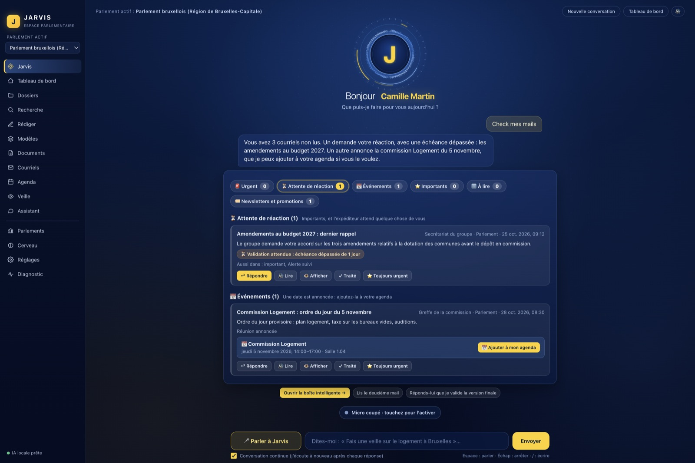
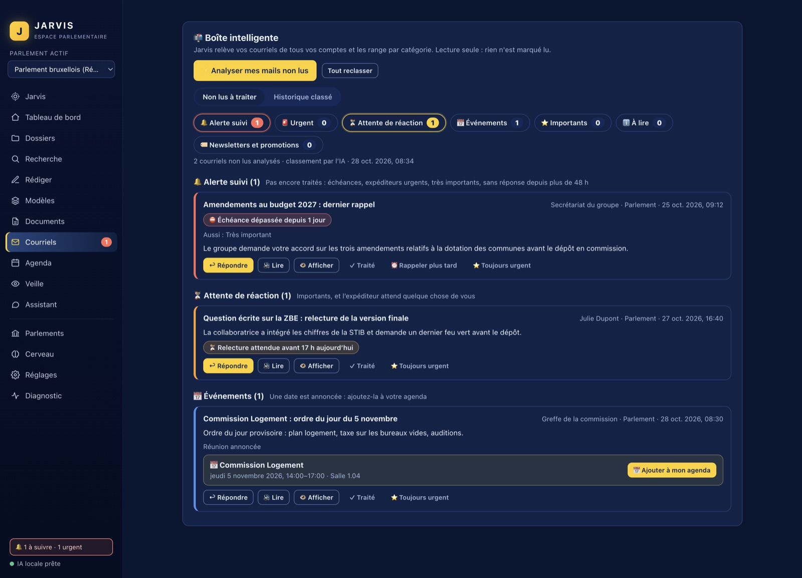
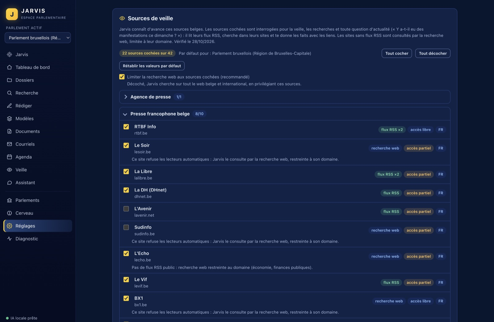
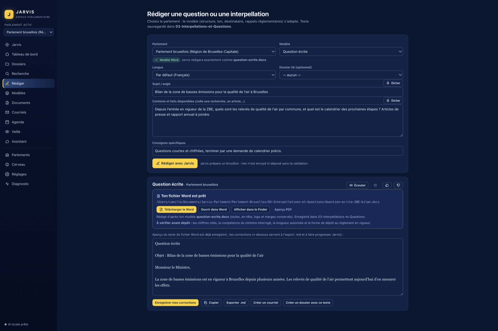
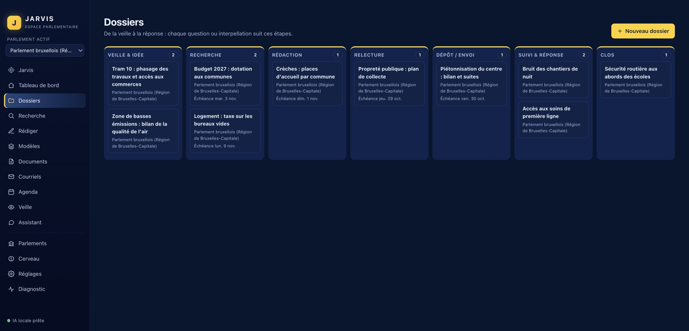
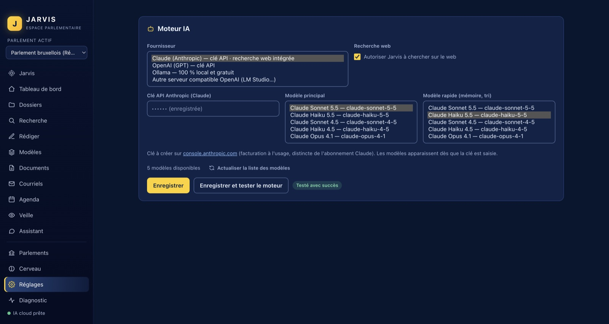
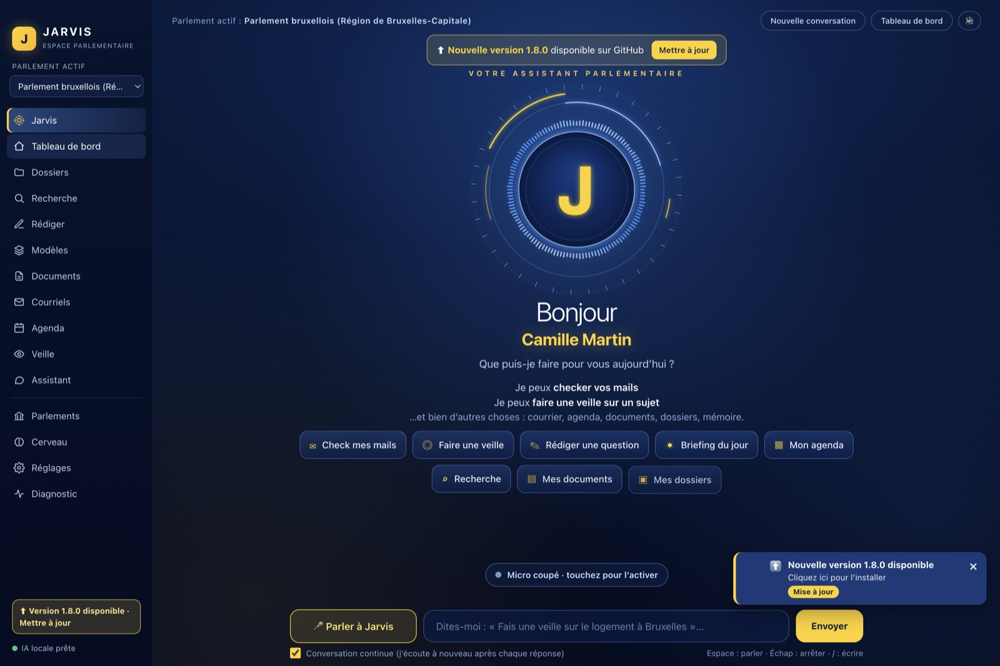

Jarvis, l'assistant vocal
Vous parlez, il agit et il répond.
À l'ouverture, Jarvis vous salue à voix haute : « Bonjour », votre nom, « Que puis-je faire pour vous aujourd'hui ? ». Activez le micro, dites « Hé Jarvis », puis votre demande.
- « Check mes mails »
- « Fais une veille sur la ZBE »
- « Rédige une question sur le tram 10 »
- « Qu'est-ce que j'ai demain ? »
- « Lis le deuxième mail »
- « Réponds-lui que… »Jarvis propose une réponse ; rien ne part sans votre confirmation.
L'écoute reste sur votre Mac
Elle utilise la reconnaissance vocale hors-ligne de macOS. Rien ne part sur Internet tant que vous ne vous adressez pas à Jarvis.
Une vraie voix française
Voix humaine hors-ligne, fournie avec l'application : féminine par défaut, voix d'homme au choix. La voix du Mac n'est jamais utilisée.
Le clavier reste possible
Vous pouvez aussi écrire votre demande, ou garder la conversation continue : Jarvis vous écoute de nouveau après chaque réponse.
Courriels et agenda
Une boîte mail triée, sans rien toucher à la vraie.
Tous vos comptes (Gmail, IMAP/SMTP) : Jarvis classe les courriels non lus et vous montre d'abord ce qui demande votre réaction.
- Cinq catégoriesEn attente de réaction, événements, importants, à lire, newsletters. Les expéditeurs que vous marquez « Urgent » passent en tête.
- Alerte suiviLes courriels très importants, les échéances et ceux restés sans réponse sont rappelés jusqu'à ce que vous les traitiez.
- Ajouter à mon agendaUne date est annoncée ? Jarvis la repère ; vous vérifiez, puis l'ajoutez à Google Agenda ou à l'Agenda d'Apple.
- Lire, répondreLecture à voix haute d'un courriel ou de tous. Le bouton Répondre propose un texte ; l'envoi n'a lieu qu'après votre confirmation.
- Surveillance en arrière-planNotifications macOS et alertes cliquables en bas à droite de l'application. Les courriels HTML s'affichent visuellement, de façon sécurisée.
Lecture seule. Le classement est local : rien n'est marqué comme lu, déplacé ou supprimé dans votre vraie boîte.
Agenda Google. Consulté en lecture seule, à l'heure de Bruxelles : vue par jour, prochain événement, liens de visioconférence.


Veille
Toute la presse belge, déjà connue de Jarvis.
42 sources sont prêtes d'avance : Belga, RTBF, Le Soir, La Libre, La DH, L'Avenir, Sudinfo, L'Echo, Le Vif, BX1, Bruzz, le Moniteur belge, les parlements, les gouvernements…
- Vous choisissezCases à cocher dans les Réglages, et ajout de vos propres sources.
- Jarvis cherche lui-mêmeIl lit les flux, parcourt les sites et cite les liens. Il ne vous renvoie pas chercher ailleurs.
- Une veille planifiéeÀ l'heure et aux jours de votre choix, retirable en un clic.
À savoir. Belga est en partie sous abonnement, et certains sites n'ont pas de flux public : Jarvis les consulte alors par la recherche web, limitée à leur domaine.


Rédiger
Des questions écrites exactement comme votre modèle.
Déposez vos propres modèles Word dans le dossier 00-Modeles de votre parlement. Jarvis les analyse, rédige comme eux et vous remet un fichier Word.
- Un fichier Word à téléchargerTéléchargement, ouverture dans Word ou affichage dans le Finder, directement depuis le bloc « Ton fichier Word est prêt ».
- Des mentions « À vérifier »Chiffres, compétence, longueur, forme de dépôt : Jarvis rappelle ce qui reste à contrôler au règlement en vigueur.
- Il prépare, il ne dépose rienQuestion écrite, orale, d'actualité, interpellation, résolution… selon l'assemblée choisie.
Huit assemblées, plus vos parlements personnalisés :
- Parlement bruxellois
- Parlement francophone bruxellois
- Chambre
- Sénat
- Parlement wallon
- Parlement de la Fédération Wallonie-Bruxelles
- Benelux
- Parlement européen
Documents/Jarvis-Parlement/ └─ Parlement-<Nom>/ créé automatiquement ├─ 00-Modeles ├─ 01-Veille ├─ 02-Recherches ├─ 03-Interpellations-et-Questions ├─ 04-Documents ├─ 05-Courriers └─ 06-Archives


Dossiers et cerveau
De la veille à la question déposée, un dossier suit chaque étape.
Sept colonnes : veille, recherche, rédaction, relecture, dépôt, suivi, clos. Chaque question ou interpellation avance de colonne en colonne.


Un cerveau qui retient vos préférences.
Style, thèmes, procédures : Jarvis les retient à partir de vos demandes et de vos corrections. Vous pouvez tout relire, corriger, exporter ou effacer.
- Recherche web sur un projetAntécédents, compétence, actualité et angles de questions, avec les sources consultées.
- Analyse d'un document, sans webUn PDF ou un Word est lu sans recherche sur Internet.
- Index de vos documentsPDF, Word, texte, courriels : interrogeables en quelques mots.
Le contenu des courriels et des documents n'est jamais transmis à la mémoire du cerveau.

Moteur IA
Le moteur de votre choix, y compris 100 % local.
Jarvis fonctionne avec le fournisseur que vous préférez. Dès que la clé est saisie, la liste des modèles de votre compte s'affiche.
- Claude (Anthropic)Avec recherche web intégrée. Clé API.
- OpenAI (GPT)Clé API.
- Ollama100 % local et gratuit : vos documents ne quittent pas le Mac.
- Autre serveur compatible OpenAIPar exemple LM Studio.
Deux modèles à choisir : un principal, et un modèle rapide pour la mémoire et le tri. Les clés sont chiffrées dans le trousseau macOS, et Jarvis demande votre accord avant d'envoyer un courriel ou un document à un moteur en ligne.


Confiance et mises à jour
Jarvis prépare. Vous décidez.
Rien n'est envoyé ni déposé sans vous
Une boîte de confirmation précède tout envoi de courriel. Les textes sont des trames de travail : aucune limite réglementaire n'est inventée.
Les contenus ne donnent pas d'ordres
Le texte d'un courriel, d'un document ou d'une page web est traité comme une donnée, jamais comme une instruction.
Vos secrets restent chez vous
Mots de passe et clés sont gardés dans le trousseau macOS. L'application ne contient aucune télémétrie.
Un diagnostic en un clic
Moteur, comptes, agenda, index, voix : tout est vérifié et expliqué. Un assistant de mise en route guide les quatre premières étapes.
Mises à jour automatiques.
Jarvis vérifie GitHub et annonce une nouvelle version sur l'accueil. L'installation se fait en un clic : le fichier est contrôlé (empreinte) avant d'être utilisé, et un retour arrière est prévu en cas d'échec.


Installation
Installer Jarvis en trois étapes.
Copiez la commande
Ouvrez le Terminal (Cmd + Espace, tapez « Terminal »), puis collez :
curl -fsSL https://raw.githubusercontent.com/renaud-bxl/jarvis-parlement-Claude/main/install.sh | bashLaissez l'installation se terminer
Le script télécharge la dernière version adaptée à votre Mac (Apple Silicon ou Intel), l'installe dans Applications, retire l'avertissement de quarantaine et lance l'application.
Configurez Jarvis en trois minutes
Votre profil, votre moteur IA et le micro. La voix est déjà incluse.
Sans Terminal : téléchargez le .dmg (arm64 pour Apple Silicon, x64 pour Intel), glissez l'application dans Applications, puis faites clic droit › Ouvrir la première fois.
Au premier lancement
- Autorisez le micro et la reconnaissance vocale quand macOS le demande.
- L'application n'est pas notarisée par Apple : l'installateur retire l'avertissement pour vous.
Dans les Réglages
- Votre nom, votre titre et votre parlement.
- Votre moteur IA : une clé API, ou Ollama en local.
- Le micro : activez-le, puis dites « Hé Jarvis ».
Questions fréquentes
Combien ça coûte ?
L'application est gratuite et libre (licence MIT). Les clés API d'Anthropic ou d'OpenAI sont facturées par ces fournisseurs, à l'usage. Avec Ollama, le moteur tourne sur votre Mac et ne coûte rien.
Où vivent mes données ?
Sur votre Mac. Les réglages, le cerveau et les dossiers sont dans un dossier de données de l'application ; vos documents sont dans Documents/Jarvis-Parlement. Mots de passe et clés sont chiffrés dans le trousseau macOS, sans télémétrie. Avec un moteur en ligne, un courriel ou un document n'est envoyé qu'avec votre accord ; avec Ollama, rien ne quitte le Mac.
Mon parlement n'est pas dans la liste.
Huit assemblées sont prêtes. Pour une autre, créez un parlement personnalisé : il reçoit son dossier et ses sous-dossiers, et vous y déposez vos modèles Word.
Quelles langues ?
Français, néerlandais et anglais : vous choisissez la langue par défaut dans votre profil, et vous pouvez en changer pour chaque texte.
Pourquoi macOS parle-t-il d'un « développeur non identifié » ?
L'application n'est pas notarisée par Apple. L'installation par commande retire l'avertissement. Avec le .dmg, faites clic droit › Ouvrir la première fois.
Jarvis peut-il envoyer des courriels sans moi ?
Non. Un envoi n'a lieu qu'après votre clic dans une fenêtre de confirmation qui montre le compte, les destinataires et le texte. La boîte est lue en lecture seule.
Comment le mettre à jour ?
Jarvis annonce lui-même les nouvelles versions et les installe d'un clic. Relancer la commande d'installation fonctionne aussi.
Comment le désinstaller ?
Quittez Jarvis et placez-le à la corbeille depuis le dossier Applications. Si vous voulez aussi effacer ses données, supprimez son dossier de données (indiqué dans Réglages) et, si vous le souhaitez, Documents/Jarvis-Parlement. Les clés enregistrées se retirent dans l'application Trousseau d'accès.
Quelles sont les limites actuelles ?
Jarvis ne fonctionne que sur macOS. Les modèles de textes sont des trames de travail, pas des formulaires officiels : vérifiez toujours le règlement du parlement concerné. Belga est en partie sous abonnement, et certains sites n'ont pas de flux public.